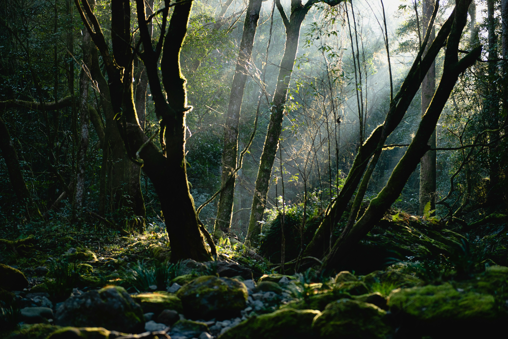
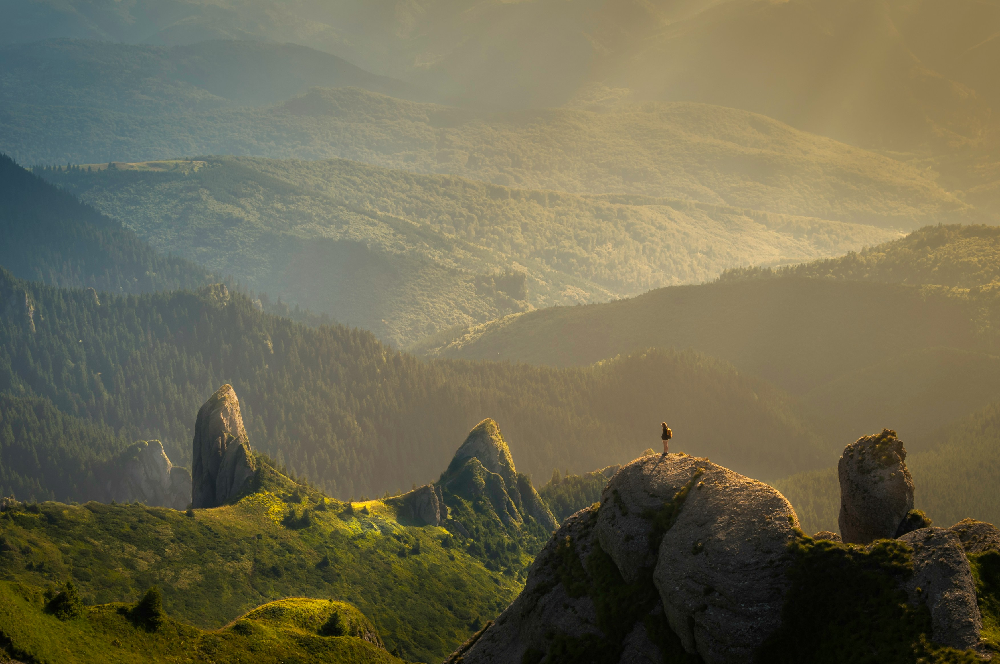
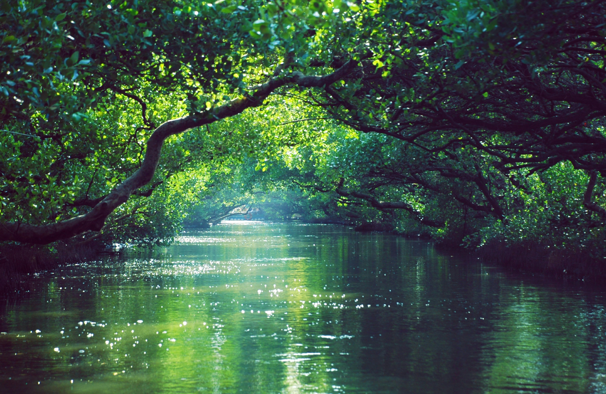
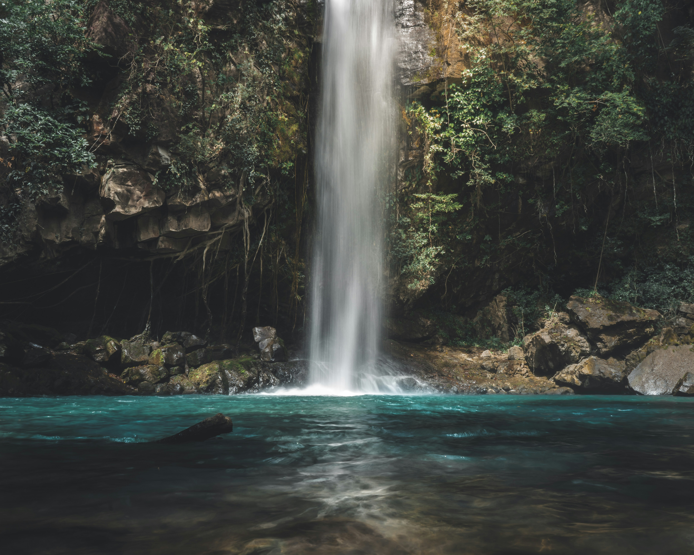
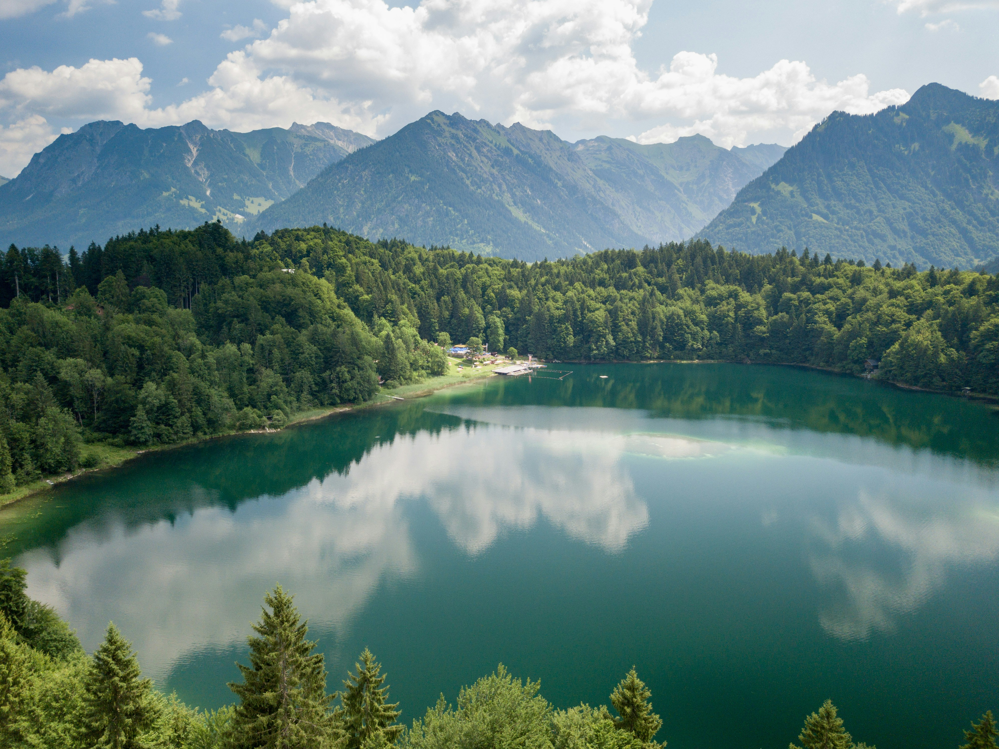
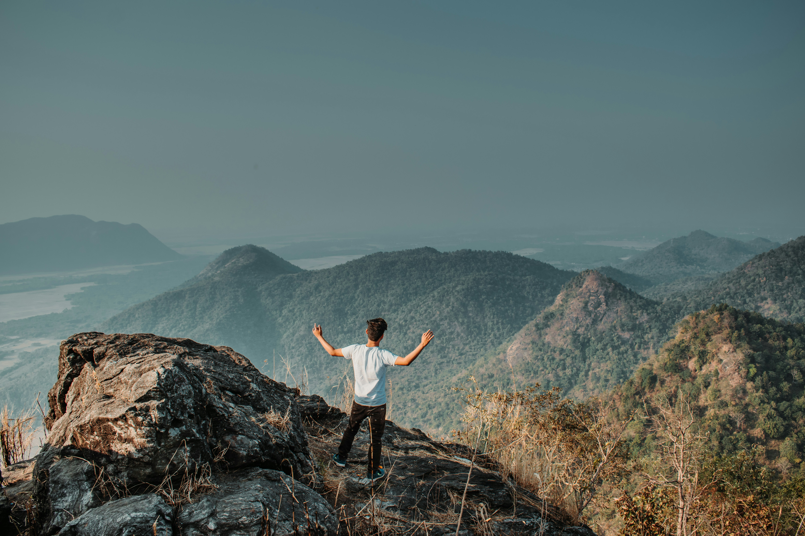
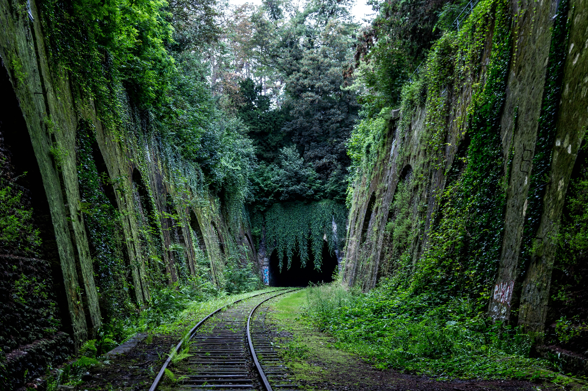
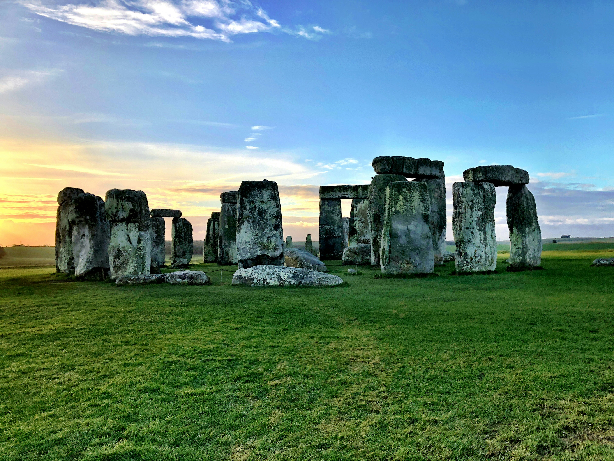

Visitor Places
Trails
Forest This trail takes you through a beautiful forest and offers a chance to see a variety of wildlife. It's a moderate hike and takes about 2 hours to complete. Learn more |
Mountain This trail takes you to the top of a mountain and offers stunning views of the park. It's a challenging hike and takes about 4 hours to complete. Learn more |
River This trail follows a river and offers a chance to see a variety of waterfowl and other wildlife. It's an easy hike and takes about 1 hour to complete. Learn more |
Cave This trail follows a river and offers a chance to see a variety of waterfowl and other wildlife. It's an easy hike and takes about 1 hour to complete. Learn more |
Lake Tropical rainforests have some of the largest rivers in the world, like the Amazon, Madeira, Mekong, Negro, Orinoco, and Congo (Zaire), because of the tremendous amount of precipitation their watersheds receive. Learn more |
View Point Acadia National Park attracts more than two million visitors each year. With many different facilities and attractions in the park, there is something to interest everyone. Learn more |
Waterfall
Trails that lead to stunning waterfalls, providing opportunities for photography and relaxation by the cascades. Learn more |
Scenic Designed for leisurely walks, scenic trails offer breathtaking views of landscapes, waterfalls, and other natural features. Learn more |
Historic These trails lead to sites of historical significance, such as old settlements, Native American ruins, or pioneer homesteads. Learn more |
Picnic Areas
-
Meadow Picnic Area
This picnic area is located in a meadow and offers a chance to see a variety of wildflowers. It has picnic tables, grills, and restrooms.
-
Lake Picnic Area
This picnic area is located near a lake and offers a chance to see a variety of waterfowl. It has picnic tables, grills, and a playground.
-
Forest Picnic Area
This picnic area is located in a forest and offers a chance to see a variety of wildlife. It has picnic tables and restrooms.
Observation Decks
-
Mountain Observation Deck
This observation deck is located at the top of a mountain and offers stunning views of the park. It's accessible by a challenging hike or by shuttle bus.
-
Lake Observation Deck
This observation deck is located near a lake and offers a chance to see a variety of waterfowl. It's accessible by a short walk or by shuttle bus.